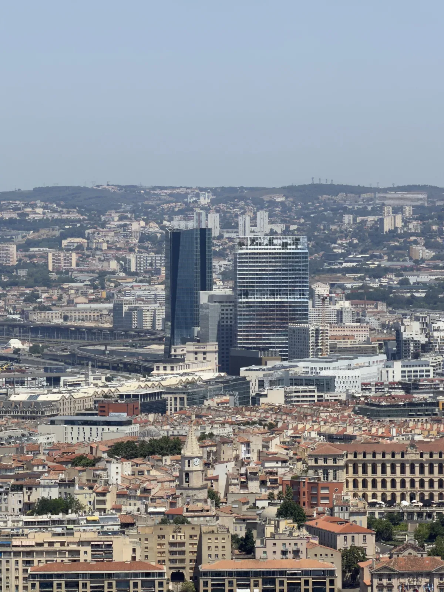

Pourquoi une estimation dans le 13003 demande une lecture locale
Un arrondissement ne suffit jamais à comprendre la valeur d’un appartement. Dans le 13003, l’environnement immédiat, la qualité de l’immeuble, l’étage, la lumière, les accès, le bruit et la copropriété peuvent créer des écarts importants entre deux biens proches.
La lecture doit rester concrète : qui peut acheter ce bien, pour quel usage, avec quelles contraintes et quelle capacité à défendre le prix après visite ?
Ce que le prix moyen ne voit pas
Le prix moyen ne voit pas la différence entre un immeuble bien tenu et une copropriété fragile, entre une rue en transformation et une rue plus difficile à projeter, entre un appartement lumineux et un logement dont l’environnement freine la décision.
Pour aller plus loin, lire comment reconnaître une estimation fiable.
Avant de vendre, faire relire le bien réel
Avant de publier un prix, il faut vérifier si le prix demandé peut être expliqué simplement : rue, immeuble, état, charges, travaux, extérieur éventuel, usage locatif ou résidence principale, moment de vente et concurrence visible.
Un conseil avant décision aide à éviter une lecture trop automatique.
Premiers repères à affiner
Cette page pose une base sobre. Elle sera enrichie progressivement avec rues, micro-secteurs, vie de quartier, extérieurs, données publiques et retours terrain, sans publier de chiffres fragiles.
Vie locale et environnement immédiat
Dans le 13003, la vie locale peut changer très vite d’une rue à l’autre. La proximité de services, de transports, d’équipements ou de commerces peut aider la projection, mais l’environnement immédiat reste décisif : accès, bruit, état de l’immeuble, parties communes, lumière et perception de sécurité.
La transformation d’un secteur ne suffit pas à valoriser automatiquement un appartement. La lecture terrain doit vérifier si le bien est réellement agréable à vivre, facile à visiter, compréhensible pour un acquéreur et cohérent avec le prix demandé.

Données, culture urbaine et prudence
Les données publiques peuvent aider à repérer des tendances ou des écarts entre biens dans le 13003, mais elles ne suffisent pas. Elles ne voient pas toujours la rue exacte, la qualité de copropriété, le DPE, la lumière, le bruit ou l’environnement immédiat.
La Belle de Mai, la Friche, le Pôle Média, Saint-Mauront selon les rues et les secteurs en transformation peuvent participer à la lecture. Mais un quartier ne se lit jamais d’un seul bloc. Deux rues proches peuvent produire deux expériences très différentes : bruit, lumière, stationnement, commerces, équipements, axes routiers ou qualité de l’immeuble.
Les signaux data restent donc ici utilisés comme cadrage interne, sans publier de prix fragile. La priorité est de relire le bâti, la copropriété, l’accès, l’environnement immédiat et l’usage réel avant de fixer un prix.
Prix repère dans le 3e arrondissement
Repère DVF issu des mutations publiées 2021–2025 : environ 2 100 €/m².
🟡 Repère utile à l’échelle de l’arrondissement, à relire selon la rue, l’immeuble, l’étage, l’état, le DPE, l’extérieur, la copropriété, le stationnement, le bruit, la lumière et le moment de vente.
Ce prix repère n’est pas une estimation automatique. Le chiffre peut être cohérent à l’échelle du 13003 et fragile pour un appartement précis. Pour comparer avec les autres secteurs, voir les prix m² par arrondissement à Marseille.
Faire relire ce prixVous avez un appartement dans le 13003 ?
Je peux vous aider à relire la rue, l’immeuble, l’environnement et le prix défendable avant décision.
Expliquer ma situationÊtre rappelé